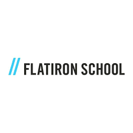

I am a Data Scientist with a background in healthcare and marketing. I am skilled in Python and SQL. I build tools for forecasting, experimentation, and interactive dashboards that turn messy data into meaningful insights.
Recent News:
- May 2025 - I am taking courses at Harvard edX and DeepLearning.AI to strengthen my data science skills.
- April 2025 - I joined Data Annotation as a freelance AI data analyst.
- April 2025 - I built a Bitcoin price prediction streamlit dashboard that I am pretty proud of!
- Jan 2025 - I began the Data Science Bootcamp at Flatiron School
Experience

Data Annoation
AI Data Analyst
- Analyzing and annotating datasets to improve the performance of large language models powering AI tools - Applying structured evaluation rubrics to assess model output and support continuous improvement - Documenting data evaluation workflows and supported feedback loop between product and data teams

Data Science Student
Focus: Python, SQL, Machine Learning, Statistical Analysis, Data Visualization
Intensive training program in Python, Statistics, Machine Learning, and Data Visualization. Curriculum included advanced projects and hands-on learning to apply theoretical concepts to real-world data challenges using modern data science tools.
Oncology Nurse
Registed Nurse
- Managed patient care for a diverse population, applying analytical skills to monitor, interpret, and act on patient data to provide optimal care in high-pressure environments - Utilized electronic health records (EHR) systems to document patient information, ensuring accuracy and facilitating seamless communication between medical teams - Collected and analyzed patient data to identify patterns and inform decision-making in acute care settings
Account Manager | Paid Search Analyst
Lead Direct to Consumer and B2B Client Marketing Strategies
- Managed over $1 million in annualized ad spend for B2C and lead generation clients - Utilized Google Ads, Google Analytics, & Microsoft Ads to drive YoY KPI improvements for clients - Created & optimized Search, Dynamic Search, Remarketing, Display, Dynamic Remarketing, Gmail Ads, RLSA, YouTube, & Shopping paid search campaigns - Performed extensive audits on every client account to create a customized strategy to exceed client goals (CPA, ROI, revenue, conversions, engagement, and/or nonbrand performance goals) - Performed advanced account analysis including demographic audience analysis, RLSA analysis, back end lead quality analysis, & more - Certified in Google Ads, Google Shopping, & Google Analytics
Student Athlete & Economics Student
Completed several computer science & math courses
- Varsity Lacrosse Athlete - Relevant Courses: Intro to CS, Fundamentals of CS, Data Structures Advanced Programming, Econometrics - Thesis in Economics: https://scholarship.claremont.edu/cmc_theses/1743/
Education
Flatiron School
December 2024 – April 2025Certificate in Data Science
Completed a full-time immersive bootcamp focused on Python, SQL, machine learning, and statistical analysis. Developed several data science projects including a Bitcoin price prediction model using macroeconomic data, and predictive models in healthcare and automotive domains.
New York University
January 2020 – May 2021Accelerated Bachelor of Science in Nursing (ABSN)
Completed an intensive 15-month accelerated nursing program with clinical rotations across NYC hospitals. Gained frontline experience in patient care, critical thinking, and healthcare systems—skills that now inform my work in healthtech and data science.
Claremont McKenna College
August 2014 – May 2018Bachelor of Arts in Economics
Studied economics with coursework in statistics, data structures, and advanced math. Served as a student-athlete and held internships in finance and marketing. My analytical training at CMC laid the foundation for my transition into data science.
Skills
- Python
- Java
- SQL
- Machine Learning
- NLP
- Deep Learning
- ETL
- Tensorflow
- Apache Airflow
- PyTorch
- A/B Testing
- Tableau
- Power BI
Selected Projects
MacroBTC Insights: Forecasting Bitcoin with Macroeconomic Data
Developed a machine learning forecasting app that predicts Bitcoin prices using macroeconomic indicators such as M2 money supply, CPI, interest rates, and trading volume. Built with XGBoost, the model achieved an R² of 0.91. Integrated the model into a Streamlit dashboard allowing interactive exploration and user-driven predictions.
| App | Code |
|---|---|
Breast Cancer Detection with Machine Learning
Used classification algorithms including logistic regression and random forest to predict breast cancer diagnoses using the Wisconsin Breast Cancer dataset. Achieved over 95% accuracy. Performed EDA, feature selection, and model tuning to optimize performance. Visualized results using confusion matrices and ROC curves.
| Code |
|---|
Vehicle Sales Trends and Forecasting
Conducted time series analysis and forecasting on U.S. vehicle sales data to identify economic trends. Built interactive visualizations with Tableau and used ARIMA models to predict future sales. Insights included seasonality in consumer purchases and correlation with macroeconomic variables like unemployment rate and gas prices.
| Code |
|---|
Lung Cancer Risk Prediction
Built a binary classification model to predict lung cancer risk based on health indicators and behavioral features. Conducted preprocessing, balanced class distributions, and evaluated multiple models including SVM and gradient boosting. Final model demonstrated strong performance with clear insights into feature importance.
| Code |
|---|
Latest from My Blog
From Oncology Nurse to Data Scientist: Why I Made the Switch
AI in healthcare is only as useful as it is clinically relevant. As a former oncology nurse, I explore how domain knowledge sharpens data science in healthtech.